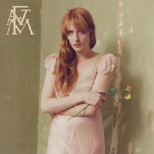
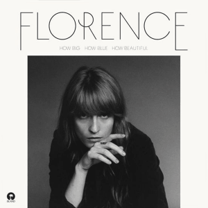

Álbum
Play List

- Nombre: High As Hope
- Lanzamiento: 29 de Junio de 2018
- Productora Discografica: Virgin EMI, Republic
- June
- Hunger
- South London Forever
- Big God
- Sky Full of Song
- Grace
- Patricia
- 100 Years
- The End of Love
- No Choir

- Nombre: How Big, How Blue, How Beautiful
- Lanzamiento: 29 de Mayo de 2015
- Productora Discografica: Island
- Ship to Wreck
- What Kind of Man
- How Big, How Blue, How Beautiful
- Queen of Peace
- Various Storms & Saints
- Delilah
- Long & Lost
- Caught
- Third Eye
- St. Jude
- Mother

- Nombre: Ceremonials
- Lanzamiento: 28 de Octubre de 2011
- Productora Discografica: Island
- Only If for a Night
- Shake It Out
- What the Water Gave Me
- Never Let Me Go
- Breaking Down
- Lover to Lover
- No Light, No Light
- Seven Devils
- Heartlines
- Spectrum
- All This and Heaven Too
- Leave My Body

- Nombre: Lungs
- Lanzamiento: 3 de Julio de 2009
- Productora Discografica: Island
- Dog days are over
- Rabbit Heart (Raise It Up)
- I'm Not Calling You a Liar
- Howl
- Kiss with a Fist
- Girl with One Eye
- Drumming Song
- Between Two Lungs
- Cosmic Love
- My Boy Builds Coffins
- Hurricane Drunk
- Blinding
- You've Got the Love